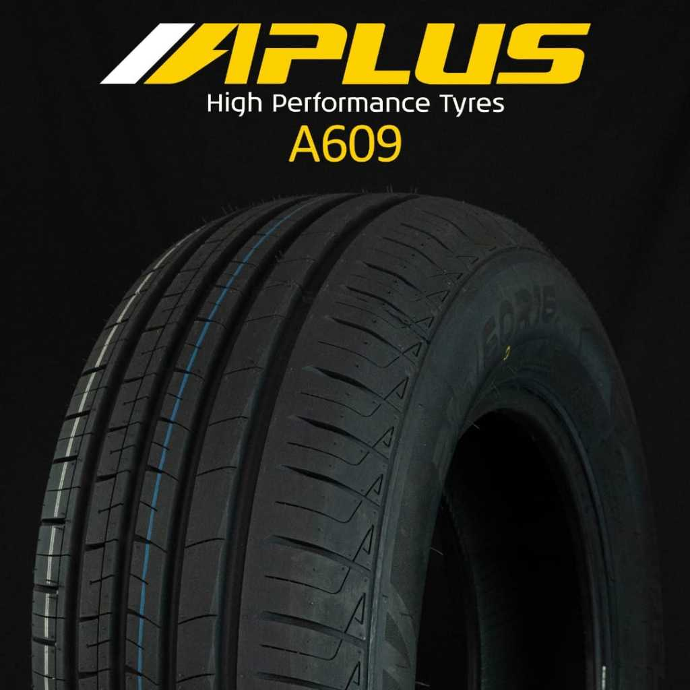

Aplus A609 195/50R16

RM 129.00
APLUS A609 is an economical passenger car tyre designed for everyday driving. Its tread pattern provides reliable road grip, stable handling and efficient water drainage in wet conditions. Designed to deliver comfortable driving, reduced road noise and balanced performance at an affordable price. Tyre Size: 195/50R16 Key Features: * Reliable wet and dry grip * Comfortable and quiet ride * Efficient water drainage * Stable handling and braking * Suitable for daily city and highway driving * Excellent value for money
Klang Hock Li Tyre Services Sdn Bhd, Klang, Selangor, Malaysia.
View live product details and enquire